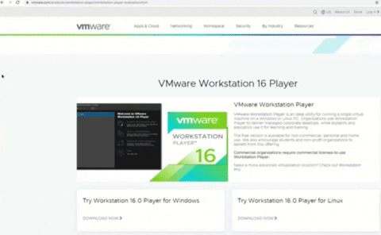

Setting up a Test Lab
For any inspiring professional wanting to break into the tech field, you have to learn and know your craft quickly. I've learned over time the fastest way to learn is to get straight into the hands-on portion and combine the learning experience with visual aids like reading documentation and watching videos.
First Install the Virtualization Software
I recommend using VMware Player as the go-to virtualization software. It has a simple user interface and straightforward virtual machine deployment. The software is free, so all you need is the correct hardware specs and decent internet speed. You can download VMware Player directly from VMware's website and install with the default prompts.
